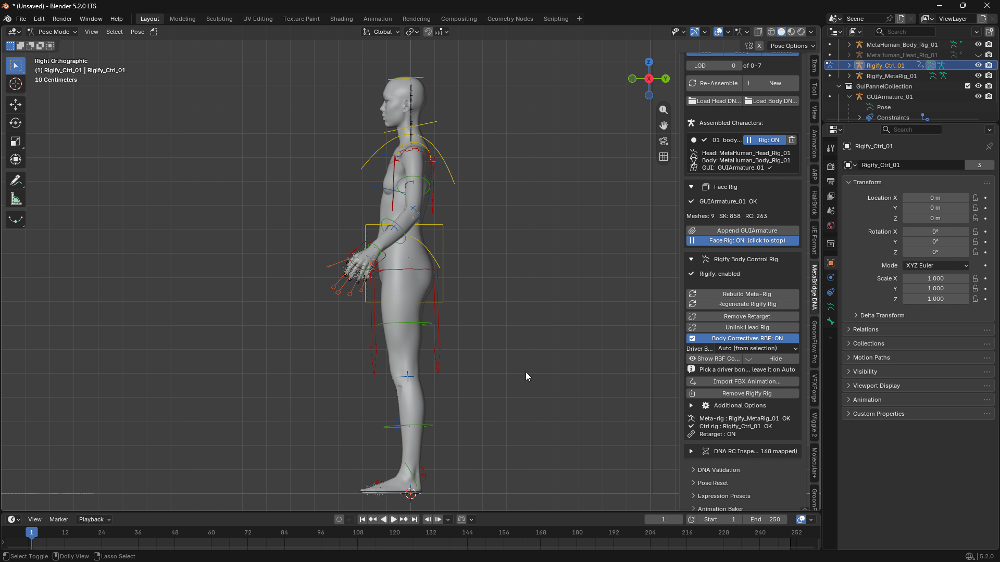
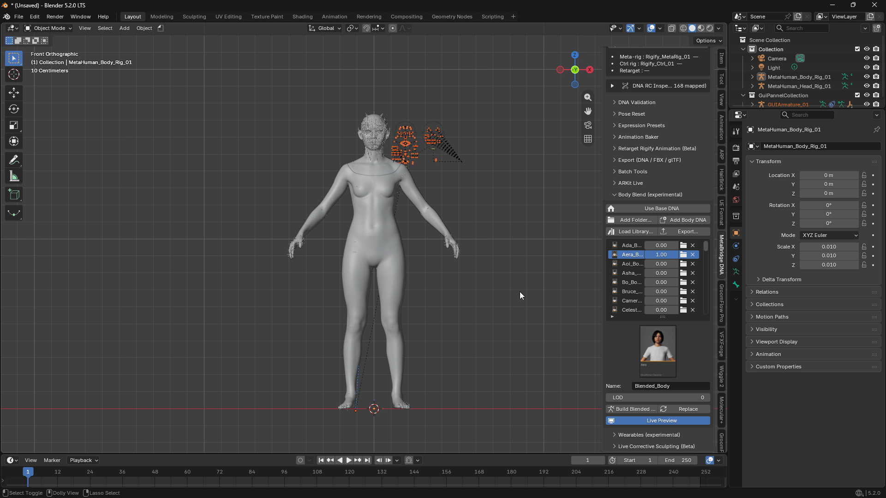
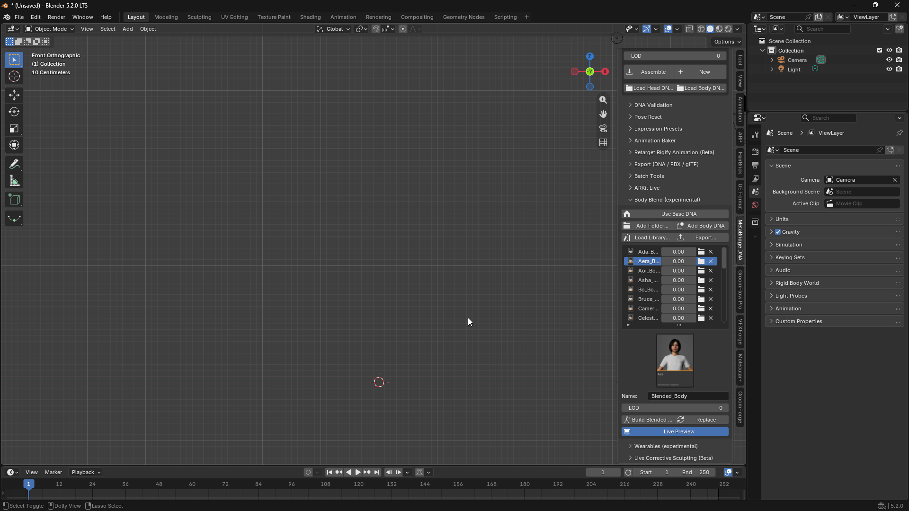
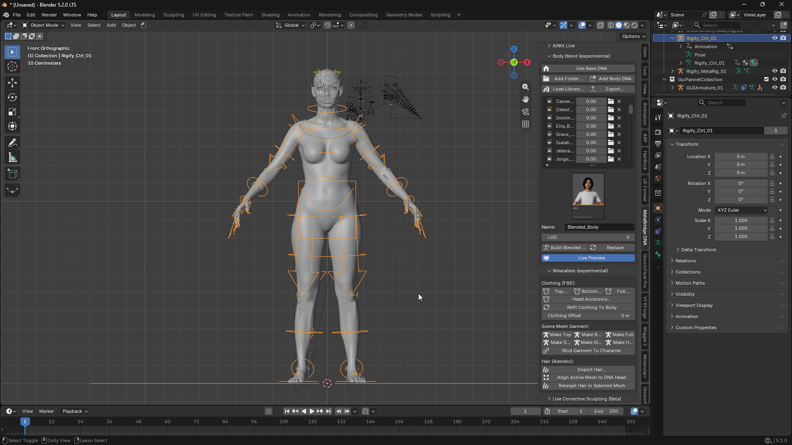
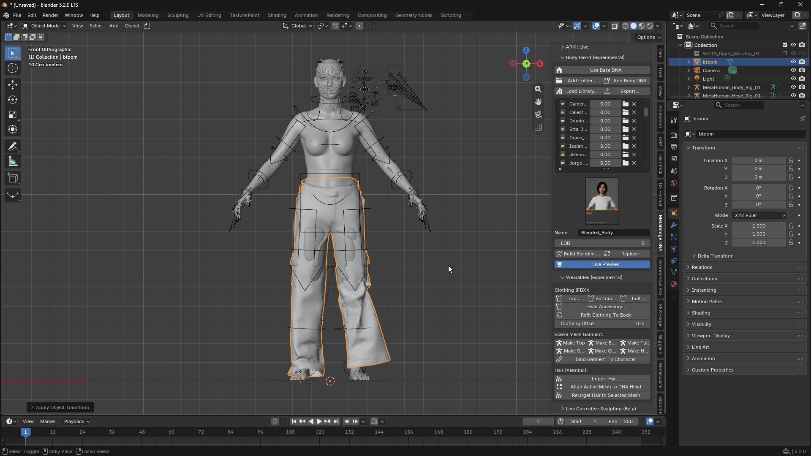
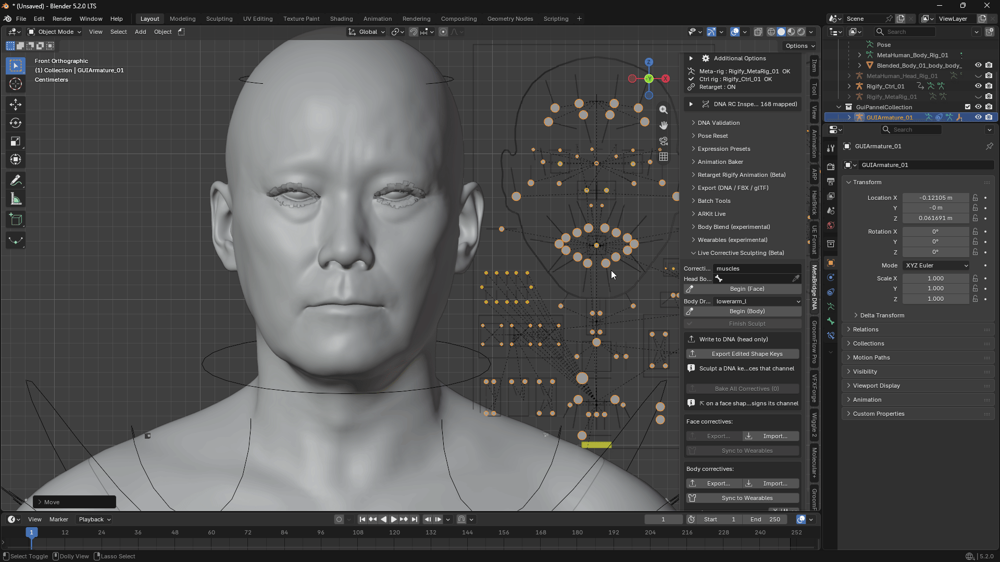

MetaBridge DNA — 사용자 가이드
🇺🇸 English | 🇰🇷 한국어
새로운 기능
v2.1.0 — Cascadeur 양방향, Unreal 양방향, 실행 취소(Undo)
Unreal (신규)
- 신규: Unreal Live — Blender에서 애니메이션한 MetaHuman 얼굴이 아무것도 내보내지 않고 작업하는 동안 Unreal의 MetaHuman에서 그대로 연기합니다. 13절 참조.
- 신규: Follow Unreal — 반대 방향입니다. Unreal에서 캐릭터를 움직이는 것이 무엇이든 — 시퀀스의 Control Rig 또는 베이크된 애니메이션 — 여기 있는 이 캐릭터를 구동합니다. 바디, 페이스 또는 둘 다.
- Unreal 쪽에는 플러그인 하나, 포트로 구분합니다. MotionForge 바디 모션은 9560, Unreal Live는 9561, Follow Unreal은 9562. 포트만 다르면 페이스 스트림과 바디 스트림을 동시에 실행할 수 있습니다.
Send to Cascadeur (신규)
- 신규: Send to Cascadeur — 사이드바에 자체 패널이 있습니다. 이 캐릭터를 Cascadeur에 넣고 거기서 애니메이션하세요. FBX를 수동으로 내보낼 필요가 없습니다. 12절 참조.
- Send Character — 리그, 메시 및 그 위에 있는 애니메이션을 전달합니다. 머리와 몸이 하나의 캐릭터로 도착하므로, 이동할 때 얼굴이 몸에 붙어 있습니다.
- Keyframes Only — 이미 있는 캐릭터에 새 포즈나 애니메이션을 보냅니다. Cascadeur에서 생성되는 것은 없으며, 그저 모션만 받아들입니다.
- Face Bones — 기본적으로 꺼져 있습니다. 얼굴은 헤드 조인트를 따라가고 바디 골격만 전송됩니다 — 캐릭터의 4분의 1이며, Cascadeur가 바디를 애니메이션하는 데 필요한 전부입니다.
- Current Frame — 보고 있는 포즈만 보냅니다. Append는 Cascadeur가 이미 가지고 있는 것 뒤에 추가합니다.
- 패널은 아무것도 누르기 전에 모션이 어떤 탭에 도착할지 알려주며, Open sample character는 씬이 비어 있을 때 리깅된 캐릭터를 불러옵니다.
- 신규: Receive from Cascadeur — 브리지가 양방향으로 작동합니다. 저쪽에서 애니메이션하고 같은 씬의 같은 캐릭터로 가져옵니다. Animation Only는 이미 있는 리그에 키를 찍고, Mesh + Animation은 캐릭터를 새 오브젝트로 가져옵니다. Onto Rigify Controls는 컨트롤 리그에 적용하여 조정하고 레이어링할 수 있습니다.
- 전체 MetaHuman 테이크를 읽는 데 1초 미만이 걸리며, 루트 모션도 함께 옵니다.
교정 — Correctives (신규)
- 신규: Bake to DNA — 스컬프한 교정(corrective)을 캐릭터의
.dna에 기록할 수 있습니다. 이 씬에서만이 아니라 어디서나 캐릭터에 속하게 됩니다. 하나는 Bake Corrective to DNA, 캐릭터의 모든 교정은 Bake All to DNA. - 신규: Export Face CSV — 프레임 범위에 걸쳐 얼굴의 셰이프 값을 스프레드시트 파일로 기록합니다. 퍼포먼스를 다른 프로그램으로 가져갈 때 사용합니다.
실행 취소 — Undo (신규)
- 이제 큰 단계에서도 Ctrl+Z가 작동합니다. Assemble, New, Delete Slot, Load Head/Body DNA, Build Meta-Rig, Generate Rigify Rig, Apply Retarget, Link/Unlink Head Rig, Remove Rigify Rig, Reload Materials를 모두 Blender의 다른 작업처럼 실행 취소하고 다시 실행할 수 있습니다.
- 페이스 리그도 실행 취소를 따릅니다. Assemble을 지나 실행 취소하면 캐릭터와 함께 꺼지고, 다시 실행하면 다시 켜집니다.
- 실행 취소할 수 없는 것은 의도적으로 제외됩니다:
.dna저장, 머티리얼 기본값 저장, ARKit Live 연결. 실행 취소는 파일을 지우거나 연결을 끊을 수 없으므로 그대로 한 방향입니다.
Body Blend — 두 라이브러리를 동시에
- 이제 표준 바디와 차일드 바디를 함께 불러올 수 있습니다.
MH_All_Body.json을 불러온 다음MH_Boy.json을 불러오면 두 세트 모두 목록에 유지됩니다 — 마지막에 불러온 것 대신 블렌드할 수 있는 39개 행. - 같은 라이브러리를 다시 불러와도 자체 행만 새로고침되므로 중복되지 않습니다.
- 다른 골격으로 만든 라이브러리를 불러오면 Build에서 나중에 실패하는 대신 즉시 알려줍니다.
ARKit Live — Smoothing 슬라이더가 반대로 되어 있었습니다
- 이제 Smoothing이 표시된 대로 작동합니다. 반전되어 있었습니다: 0으로 낮추면 — 원시적이고 즉각적인 설정으로 설명된 값 — 얼굴이 완전히 얼어버렸습니다. 이제 낮추면 원시적이고 날렵한 피드, 올리면 더 부드럽고 약간 지연되는 피드입니다. 라벨이 항상 주장했던 대로입니다.
- 이전에 Smoothing 값이 괜찮다고 정착했다면 다시 시도해 보세요 — 같은 숫자가 이제 반대로 작동합니다. 0.5는 동일하므로 기본값을 사용하는 사람은 차이를 느끼지 못합니다.
.dna 로드 및 저장 시 정확한 정보 표시
- 잘못된 파일을 선택하면 이제 알려줍니다. PNG, JSON 또는 DNA가 아닌 다른 것은 예전에 "성공적으로" 로드되어 뼈도 메시도 없는 캐릭터를 남겼습니다. 이제 파일의 실제 문제를 명명하는 메시지와 함께 거부됩니다.
- 실패한 저장이 더 이상 성공을 보고하지 않습니다. 존재하지 않는 폴더에 저장하면 파일이 어디에도 기록되지 않았는데 "Saved"라고 표시되곤 했습니다.
- 실패한 로드는 이미 있던 캐릭터를 그대로 둡니다. 예전에는 페이스 리그를 꺼버리고 그대로 두었습니다.
더 부드러운 뷰포트
- Apply Retarget을 완료한 캐릭터는 주변 작업이 더 가볍습니다. 바디 코렉티브가 모든 뷰포트 변경 때마다 — 카메라 돌리기, 오브젝트 선택, 페이스 컨트롤 이동 — 바디가 움직이지 않았는데도 재계산되곤 했습니다. 이제 그 작업은 바디 본이 실제로 움직일 때만 발생합니다.
Load Live Link Face CSV — 녹음이 이제 끝까지 로드됩니다
- CSV가 더 이상
could not make path to "value"로 중간에 멈추지 않습니다. 녹음을 가져오면 모든 셰이프에 대한 슬라이더가 한 번에 생성되는데, 추가할 때마다 이전 슬라이더를 사용할 수 없게 만들었습니다 — 그래서 파일이 두 번째 셰이프에서 실패하고 아무것도 키가 찍히지 않았습니다. 라이브 캡처는 이 문제가 없었습니다: 첫 틱에서 슬라이더를 만들고 이후에는 추가하지 않기 때문입니다. 이제 녹음 파일이 전체가 로드됩니다. - 재생 헤드가 원래 위치로 돌아갑니다. 열이 일치하지 않는 CSV는 아무것도 일치하지 않는다고 보고하면서 씬을 녹음 끝에 남겨두곤 했습니다.
다른 프로그램용 플러그인이 이제 애드온과 함께 제공됩니다
- Cascadeur 및 Unreal 플러그인이 애드온 안에 포함되어 있습니다.
third_party폴더에 Marvelous Designer 플러그인과 함께 있습니다. 다운로드할 것도, 별도 제품을 설치할 것도 없습니다 — 설치에서 위치를 알려주며, 각 절에서 자체 설정을 다룹니다.
더 작은 수정
- LOD 행은 이제 선택한 레벨에 표정이 포함되지 않을 때 알려줍니다. MetaHuman 머리는 LOD 0에서만 표정을 유지합니다. 그 이상에서는 얼굴이 조인트로만 움직이며, 예전에는 페이스 리그가 멈춘 것처럼 보였습니다.
- Import FBX Animation은 이제 컨트롤 리그가 방금 키를 찍은 뼈를 계속 구동하고 있을 때 경고합니다. 경고는 존재했지만 작성된 바로 그 경우에 나타나지 않았습니다.
- DNA 인스펙터의 Bone View에서 Next 버튼이 목록 끝 몇 번 전에 반응을 멈췄습니다.
- 애드온을 끄면 이제 시작된 모든 것이 중지됩니다. 비활성화된 상태에서도 백그라운드 평가 두 개가 계속 실행되었습니다.
메시를 편집하고 .dna로 다시 쓰는 사용자를 위해
- 눈 메시를 편집하고 Include Mesh Edits로 내보내면 조용히 같은 눈의 다른 LOD에 해당 버텍스를 기록하여 편집한 LOD는 변경되지 않은 채 남을 수 있었습니다. 턱, 치아, 혀 및 머리 자체는 영향을 받지 않았습니다. 수정됨.
이 애드온은 무엇인가요?
MetaBridge DNA는 Epic Games MetaHuman 캐릭터를 Blender로 가져와 실시간으로 얼굴을 포즈하고 다시 내보낼 수 있게 해줍니다.
다음을 할 수 있습니다:
- MetaHuman 캐릭터(머리 + 몸)를 Blender로 로드
- 슬라이더나 본을 움직여 표정 만들기 — 셰이프 키 편집 불필요
- 자주 쓰는 표정을 재사용 가능한 프리셋으로 저장하고 여러 개를 동시에 블렌드
- Apple의 Live Link Face 앱으로 iPhone에서 실시간으로 얼굴 구동
- 캐릭터용 애니메이션 가능한 바디 리그(Rigify) 구축
- 여러 바디를 함께 블렌드하고 결과물에 의상과 헤어를 입히기
- 모든 것을 DNA, FBX 또는 glTF로 다시 내보내기
모든 것이 한 곳에 있습니다: 3D 뷰포트 오른쪽의 N 패널을 열고 MetaBridge DNA 탭을 찾으세요.
설치
MetaBridge DNA는 Blender 확장 프로그램입니다. 다음 중 하나로 설치하세요:
metabridge_dna-*.zip을 Blender 창으로 끌어다 놓거나,- Edit ▸ Preferences ▸ Add-ons ▸ Install from Disk에서
.zip을 선택하세요.
Blender는 4.5 이상, Windows 64비트가 필요합니다.
업데이트와 제거는 다른 확장 프로그램과 마찬가지로 Edit ▸ Preferences ▸ Add-ons에서 수행합니다.
이전 버전을 예전 방식으로 설치했다면 먼저 제거하세요 — 그렇지 않으면 Blender가 둘 다 로드하여 패널이 두 번 나타납니다.

다른 프로그램용 플러그인
세 가지 기능이 Blender 외부의 프로그램에 접근하며, 각각 그쪽에 작은 플러그인이 필요합니다. 모두 이 애드온과 함께 제공됩니다 — 다운로드할 것이 없습니다.
| 프로그램 | 위치 | 용도 |
|---|---|---|
| Marvelous Designer | md_plugin 폴더 |
MD Live (§11) |
| Cascadeur | third_party/KimodoCascadeurPlugin_free.zip |
Send to Cascadeur (§12) |
| Unreal Engine | third_party/MotionForgeLiveLink_UE5.8.zip |
Unreal Live, Follow Unreal (§13) |
처음에는 아무것도 설치하지 마세요. 아래의 각 절에서 해당 기능에 도달할 때 자체 설정을 다룹니다. 사용하지 않는 기능은 아무 비용도 들지 않습니다.
third_party 폴더는 설치된 애드온 안에 있습니다:
%APPDATA%\Blender Foundation\Blender\<version>\extensions\user_default\metabridge_dna\third_party
<version>을 설치한 Blender 버전 — 4.5, 5.0 등 — 으로 바꾸세요. 결과 경로를 파일 탐색기 주소 표시줄에 붙여넣으세요.
버전을 추측하고 싶지 않다면 Blender가 알려줍니다: Edit ▸ Preferences ▸ Add-ons에서 MetaBridge DNA를 찾아 화살표를 클릭해 펼치세요. File 행에 전체 경로가 표시됩니다 — third_party는 그 파일 옆에 있습니다.
Preferences ▸ Interface ▸ Developer Extras를 켜면 같은 행에 작은 폴더 버튼이 추가되어 애드온 폴더를 열어줍니다.
폴더 안의 README.md가 아래 단계를 반복합니다. Marvelous Designer는 예외입니다 — Open MD Plug-in Folder 버튼이 바로 그곳으로 안내합니다.
1. 캐릭터 불러오기
단계:
- 폴더 아이콘을 클릭하고 MetaHuman 캐릭터가 있는 폴더를 선택하세요.
- 캐릭터의 썸네일을 클릭하여 선택하세요.
- 로드할 항목에 따라 Head / Body / Textures를 켜거나 끄세요.
- LOD 레벨을 선택하세요 (0 = 최고 품질, 숫자가 높을수록 더 가볍고 빠름).
- Assemble을 클릭하세요.

알아두면 좋은 점:
- 캐릭터를 여러 명 불러올 수 있습니다 — New를 클릭하여 별도 슬롯으로 추가하세요.
- 하단 목록은 현재 씬에 있는 모든 캐릭터를 보여줍니다. 옆의 라디오 버튼을 클릭하면 해당 캐릭터가 "활성"이 됩니다.
- 휴지통 아이콘은 씬에서 캐릭터를 제거합니다.
- 나중에 다른 LOD를 불러오려면 LOD 번호를 변경하고 Re-Assemble을 클릭하세요.
- LOD와 표정: MetaHuman 머리는 LOD 0에서만 표정을 담고 있습니다. 그 이상에서는 얼굴이 여전히 움직입니다 — 턱이 열리고, 눈이 돌아가며, 본이 구동하는 모든 것이 작동합니다 — 하지만 셰이프 기반 디테일은 없습니다. 해당 레벨에 캐릭터가 포함하지 않기 때문입니다. 그런 경우 패널에
LOD n: joints only라고 표시됩니다. 얼굴 작업에는 LOD 0을 사용하세요. 더 높은 레벨은 바디를 애니메이션할 때 더 가벼운 씬을 위한 것입니다. - 특정
.dna파일 하나를 로드해야 하나요? Assemble 옆의 Load Head DNA... / Load Body DNA... 버튼을 사용하세요. - 머티리얼 기본값: 애드온 폴더에
material_defaults.json파일이 있으면 그 BSDF 값이 모든 Assemble에서 새로 생성되는 머티리얼에 자동 적용됩니다. 기존(이미 생성된) 머티리얼은 덮어쓰지 않으므로 Re-Assemble에서도 편집 내용이 보존됩니다. - 모든 메시는 Assemble 시 자동으로 Smooth Shading으로 설정됩니다.
2. 표정 만들기 (페이스 리그)
단계:
- Append GUIArmature를 클릭하세요 — 표정을 만드는 데 사용할 컨트롤 리그가 추가됩니다.
- Face Rig: ON으로 설정하세요.
- 뷰포트에서 GUIArmature를 선택하고 Pose Mode로 들어가 본을 움직이세요. 움직일 때마다 얼굴이 실시간으로 업데이트됩니다.

알아두면 좋은 점:
- 셰이프 키를 직접 편집하는 것이 아니라 컨트롤 본만 움직이는 것입니다.
- 본을 움직여도 반응이 없으면 Face Rig가 켜져 있는지 다시 확인하세요.
3. 표정 프리셋 (표정 저장 및 재사용)
매번 처음부터 얼굴을 포즈하는 대신 표정을 한 번 저장해 두고 재사용하세요 — 여러 표정을 섞을 수도 있습니다.
프리셋 저장:
- 원하는 대로 얼굴을 포즈하세요.
- Save As Current Expression...을 클릭하고 이름을 지정하세요.
- 이미 저장한 프리셋을 업데이트하려면 목록에서 선택하고 Save Current Expression을 클릭하세요.
프리셋 사용:
- 드롭다운에서 프리셋을 선택하세요.
- Apply Preset을 클릭하면 바로 아래 Active Sliders 목록에 나타나며 이미 켜져 있습니다.
- 슬라이더를 0(표정 없음)과 1(완전한 표정) 사이로 드래그하세요.
여러 표정 블렌드:
- 여러 슬라이더를 동시에 활성화할 수 있습니다 — 자동으로 결합됩니다.
- Add All From Active Folder는 현재 폴더의 모든 프리셋을 모두 0에서 시작하는 슬라이더로 로드합니다.
- X 버튼은 슬라이더 하나를 제거하고, Clear All Sliders는 모든 것을 중립으로 재설정합니다.
- 슬라이더는 일반 Blender 프로퍼티이므로 키프레임을 찍고 애니메이션할 수 있습니다.

알아두면 좋은 점:
- Set Folder...는 프리셋이 저장/로드되는 위치를 선택합니다.
- Import...는 컴퓨터 어디에서나 프리셋 파일을 가져옵니다.
다른 프로그램의 프리셋 변환:
- Convert & Import (Maya/Houdini)...: Maya나 Houdini에서 저장된 포즈를 가져와 본 이름을 자동으로 일치시킵니다.
- Convert ARKit Payload...: ARKit Live에서 사용하는 52개의
ARKit_...프리셋을 생성하는 일회성 설정 단계입니다.
4. ARKit Live (iPhone에서 실시간 얼굴 트래킹)
Apple의 무료 Live Link Face 앱을 사용하여 iPhone에서 실시간 표정을 MetaHuman 캐릭터로 직접 스트리밍하세요.
설정:
- iPhone과 컴퓨터가 같은 Wi-Fi 네트워크에 있는지 확인하세요.
- Live Link Face 앱에서 일반 스트리밍 모드를 사용하세요 ("MetaHuman Animator" 모드가 아닌).
- 앱에서 대상 IP 주소를 컴퓨터 주소로, 포트를 11111로 설정하세요.
- Blender의 ARKit Live 패널에서 Host를
0.0.0.0, Port를11111로 두고 Connect를 클릭하세요.

트래킹 느낌 조정:
| 설정 | 기능 |
|---|---|
| Smoothing | 움직임을 더 부드럽고 덜 떨리게 만듭니다. 높을수록 부드럽지만 반응이 약간 느립니다. |
| Deadzone | 작고 노이즈가 많은 값을 무시하여 휴식 중에 얼굴이 흔들리거나 떨리지 않게 합니다. |
| Gain | 최대 강도에 도달하지 못하는 표정을 증폭합니다. |
녹음:
- Record를 클릭하여 라이브 퍼포먼스를 타임라인에 키프레임으로 저장하세요. 완료되면 Stop Recording을 클릭하세요.
- 또는 Load Live Link Face CSV...를 사용하여 미리 녹음된 CSV 파일을 베이크하세요.
머리 회전 (실험적):
- 먼저 바디의 Rigify 리그가 설정되어 있어야 하며, Apply Retarget과 Link Head Rig가 모두 완료되어야 합니다.
- 특정 축에서 머리가 잘못 회전하면 Invert Pitch / Yaw / Roll 버튼을 사용하세요.
문제 해결:
- 아무것도 움직이지 않음: 빨간색 Apply error 메시지가 있는지 확인하고 올바른 캐릭터가 활성화되었는지 확인하세요.
- 휴식 상태에서 얼굴이 약간 어긋남: 먼저 Live Link Face 앱의 Calibrate 기능을 사용한 다음 Deadzone/Gain으로 미세 조정하세요.
5. Rigify 바디 컨트롤 리그
Rigify를 사용하여 MetaHuman 바디를 완전히 애니메이션 가능한 리그로 변환합니다.
먼저 Rigify 애드온이 활성화되어 있어야 합니다 (Edit > Preferences > Add-ons에서 "Rigify" 검색).
순서대로 단계:
- Build Meta-Rig — 바디와 일치하는 초안 골격을 생성합니다.
- Generate Rigify Rig — 초안을 실제 포즈 가능한 컨트롤 리그로 변환합니다.
- Apply Retarget — 컨트롤 리그를 연결하여 MetaHuman 바디를 구동하게 합니다. 바디 코렉티브가 이 단계에서 등록됩니다.
⚠️ 1단계의 초안 골격이 올바르게 배치되지 않았다면 메시가 왜곡될 수 있습니다. 적용 전에 2단계 후 모든 것이 올바른지 확인하세요.
- Link Head Rig — 머리를 연결하여 바디와 함께 움직이게 합니다.
- Remove Rigify Rig — 처음부터 다시 시작해야 한다면 1~4단계의 모든 것을 제거합니다.
추가 옵션

Remove Rigify Rig 아래에 접힌 섹션으로, 거의 건드릴 필요가 없는 스위치들이 있습니다:
- IK Stretch ON/OFF — 기본적으로 꺼져 있어 팔다리가 뻣뻣하게 유지됩니다. IK 컨트롤을 최대 범위 너머로 당길 때 팔과 다리가 늘어나길 원하면 켜세요.
- Heel Pivot ON/OFF — 기본적으로 꺼져 있습니다. 켜면 발 스핀 컨트롤을 회전할 때 발이 뒤꿈치를 중심으로 회전합니다. 또한 위로 회전할수록 발이 컨트롤러에서 멀어지므로, 특별히 힐 피벗을 원하지 않으면 꺼두세요.
- Finger IK ON/OFF — 기본적으로 꺼져 있습니다. 아래 참조.
Finger IK
일반적으로 각 손가락 관절을 하나씩 회전해야 합니다. Finger IK를 켜면 각 손가락의 끝에 타겟이 생깁니다 — 타겟을 드래그하면 손가락 전체가 따라옵니다. 물건을 잡거나, 손을 표면에 대거나, 포즈를 잡을 때 훨씬 빠릅니다.
Rigify에는 자체 Finger IK가 없으므로 이 애드온이 추가합니다. 엄지를 포함한 10개 손가락 전체가 지원됩니다.
- Additional Options에서 Finger IK를 켜세요. 손끝에 작은 박스 컨트롤 10개가 나타납니다.
- Pose Mode에서 손끝 컨트롤을 드래그하세요. 그 손가락이 그것을 향해 구부러지며, 다른 손가락은 움직이지 않습니다.
- 끄면 다시 관절을 직접 회전하는 방식으로 돌아갑니다.
손가락별 슬라이더
버튼 아래에 10개 손가락 각각에 대한 슬라이더가 있습니다: 0은 관절을 회전하여 그 손가락을 포즈하고, 1은 손끝 타겟을 따르게 합니다. ON/OFF 버튼은 10개 모두를 한 번에 설정할 뿐입니다.
이것이 실제 손 애니메이션에서 유용한 이유입니다:
- 물건 잡기 — 물건에 닿는 손가락은 1로 설정하여 손목이 움직여도 제자리에 있고, 공중에 있는 손가락은 0으로 두어 손으로 포즈한 호가 더 좋게 보입니다. 엄지는 보통 자체 설정을 원합니다.
- 접촉으로 완화 — 중간 값은 둘을 블렌드합니다. 손이 표면에 닿을 때 몇 프레임에 걸쳐 손가락을 0에서 1로 키프레임하면 툭 튀지 않고 제자리에 안착합니다.
- 문제 있는 손가락 하나 빼기 — 한 손가락이 이상하게 구부러지면 손 전체를 FK로 되돌리는 대신 해당 슬라이더만 낮추세요.
포즈를 잃지 않고 전환 — IK to FK / FK to IK
두 슬라이더는 두 개의 별도 포즈를 보유하므로 슬라이더를 움직이면 하나를 옮기는 것이 아니라 둘 사이를 전환합니다. 이 두 버튼이 포즈를 옮겨줍니다:
- IK to FK — 손끝 타겟으로 만든 포즈를 유지한 채 조인트 컨트롤에 넘기고 10개 손가락을 모두 0으로 전환합니다. 손가락은 움직이지 않습니다. IK 포즈가 만족스러울 때 관절별로 계속 다듬고 싶거나 FK에서 키프레임을 찍기 전에 사용하세요.
- FK to IK — 손으로 만든 포즈를 유지한 채 손끝 타겟을 그 위로 옮기고 10개 손가락을 모두 1로 전환합니다. 역시 아무것도 움직이지 않습니다. 손으로 포즈한 손이 이제 무언가를 잡아야 할 때 사용하세요.
둘 다 10개 손가락 전체에 한 번에 작동하며, 반복해서 눌러도 안전합니다.
알아두면 좋은 점:
- 켜면 손가락이 이미 있던 위치에 정확히 유지됩니다 — 아무것도 튀지 않습니다.
- 꺼도 포즈는 정확히 그대로입니다 — 자유롭게 오가며 사용할 수 있습니다.
- 손끝 타겟은 손을 따라가므로 팔을 포즈해도 손가락 포즈가 유지됩니다.
- Snap Fingertip Targets to Pose는 포즈를 바꾸지 않고 10개 타겟을 모두 현재 손가락 위치로 옮깁니다. 슬라이더가 0과 1 사이에 있을 때 — 손가락이 두 결과 사이 어딘가에 있어 타겟에 닿지 않을 때 — 또는 애니메이션을 로드한 후에 필요합니다.
- 슬라이더를 손으로 낮추는 것은 IK 포즈를 유지하지 않습니다. 조인트 컨트롤은 여전히 이전에 가지고 있던 것을 유지하므로 손가락이 그쪽으로 튀어 오릅니다. 대신 IK to FK를 사용하세요 — 아래 참조.
- 손가락에는 팔꿈치 스타일의 방향 제어가 없으므로 솔버가 손가락이 구부러지는 방향을 결정합니다. 일반적인 포즈에서는 관절을 따라 합리적으로 움직이지만, 타겟을 옆으로 멀리 당기면 손가락이 이상하게 비틀릴 수 있습니다. 그럴 때는 해당 손가락의 슬라이더를 낮추세요.
- Finger IK가 꺼져 있으면 리그는 기본 Rigify와 정확히 동일하게 작동합니다 — 손가락 마스터 컬과 개별 관절 컨트롤이 평소처럼 작동합니다.

바디 코렉티브 — 자동 근육 및 비틀림 디테일
Apply Retarget이 완료되면 바디 리그가 캐릭터 DNA에 내장된 데이터를 사용하여 이차 변형(견갑골, 근육 돌출, 팔다리 비틀림)을 자동으로 추가합니다. 설정이 필요 없습니다.
- Body Correctives RBF: ON/OFF — RBF 솔버 레이어를 전환합니다. 가장 사실적인 결과를 위해 ON으로 두세요. 기본 비틀림/근육 교정은 어느 쪽이든 활성 상태로 유지됩니다.
- 캐릭터의 DNA에 이 데이터가 없으면 버튼이 "none in this DNA"로 표시되고 회색 처리됩니다.
수동 미세 조정 (RBF 컨트롤러)
자동 결과를 넘어 수동 터치업이 필요한 부분:
- Driver Bone 목록에서 원하는 관절을 선택하거나 Auto로 두고 Pose Mode에서 컨트롤을 선택하세요 (예:
shoulder.L). - Show RBF Controls를 클릭하세요 — 해당 영역에 작은 다이아몬드 모양의 헬퍼 본이 나타납니다.
무릎에는 Driver Bone 목록을 사용하세요. 무릎의 코렉티브는
calf_l/calf_r에 속하며, 다리가 IK에 있을 때 그쪽을 가리키는 선택 가능한 컨트롤이 없으므로 Auto는 거기서 아무것도 찾지 못합니다. 3. Active RBF Controllers 목록에서 본별로 influence 슬라이더(0–1)를 조정하세요: -0= 자동 교정 끄기 (본이 휴식/중립 상태 유지) -1= 자동 교정 완전 적용 (기본값) 4. 헬퍼 본을 손으로 회전하여 자동 결과 위에 수동 교정을 추가하세요. 5. 완료되면 Hide를 클릭하여 뷰포트를 정리하세요.
influence = 1에서 헬퍼 본을 회전하면 전체 자동 결과 위에 수동 회전이 쌓입니다.influence = 0에서는 수동 회전만 사용됩니다.
Import FBX Animation (베타)
Unreal에서 내보낸 MetaHuman 애니메이션(FBX)을 이 캐릭터에 직접 적용하세요 — 캐릭터의 비율이 소스 애니메이션과 정확히 일치하지 않아도 바디와 머리가 자동으로 함께 애니메이션됩니다.
- Import FBX Animation...을 클릭하고
.fbx파일을 선택하세요. - 바디와 머리 모두 리타겟된 애니메이션으로 키프레임이 찍힙니다.
컨트롤 리그가 이 캐릭터에 연결되어 있는 동안에는 버튼이 회색으로 표시됩니다. 리그가 매 프레임 가져온 애니메이션을 덮어쓰기 때문입니다. 위의 Remove Retarget(및 Unlink Head Rig)을 클릭한 다음 가져오세요. 회색 버튼에 마우스를 올리면 이 알림이 표시됩니다.
Retarget Rigify Animation (베타)
다른 이미 애니메이션된 캐릭터의 애니메이션을 이 캐릭터의 컨트롤 리그에 복사하세요. 애니메이션이 FBX 파일이 아니라 리그에 있을 때 사용합니다.
- Retarget Rigify Animation (Beta) 패널을 여세요.
- Source Rig — 복사할 애니메이션된 아마추어.
- Source Type — 해당 리그의 종류:
| 소스 유형 | 용도 |
|---|---|
| UE5 Mannequin | Unreal 자체 매네킹 |
| Fortnite | Fortnite 캐릭터 (UE5와 같은 본 이름) |
| MetaHuman | 다른 MetaHuman (UE5와 같은 본 이름) |
| Mixamo | Mixamo에서 다운로드한 모든 것 |
| Blender Rigify | Blender 자체 Rigify로 만든 리그 |
- Target Rig — 이 캐릭터의 Rigify 컨트롤 리그.
- Retarget을 클릭하세요.
애니메이션은 두 캐릭터의 비율과 휴식 포즈가 다르다는 것을 보정하여 타겟의 컨트롤에 베이크됩니다.
Blender Rigify를 소스로 사용하는 경우:
이 애드온의 리그는 기본 Rigify 리그와 동일하지 않습니다 — 척추에 Blender의 4개 대신 6개 세그먼트가 있으므로 애니메이션을 단순히 복사할 수 없습니다. Blender Rigify를 선택하면 둘을 올바르게 매핑합니다.
해당 애니메이션이 IK 또는 FK 팔과 다리로 만들어졌든 작동합니다. 소스 리그를 먼저 변환하거나 베이크할 필요가 없습니다.
알아두면 좋은 점:
- Apply Retarget과 Link Head Rig가 설정되면 연결이 파일과 함께 저장됩니다 — 다시 열면 Apply Retarget을 다시 클릭하지 않아도 작동합니다.
- Rigify 어깨 본(
shoulder.L/R)은 팔을 올릴 때 수동으로 올려야 합니다. 가장 자연스러운 어깨 변형을 위해 팔과 함께 어깨 본도 키프레임하세요.
6. 바디 블렌드 (실험적)

두 개 이상의 MetaHuman 바디 타입 — 그리고 그에 맞는 머리 — 를 완전히 새로운 블렌드 캐릭터로 결합하세요. 기본적으로 접혀 있는 자체 Body Blend (experimental) 패널에서 찾을 수 있습니다.
소스 추가:
- Use Base DNA — base_dna/ 폴더에서 애드온 자체 참조 캐릭터를 추가합니다.
- Add Folder... — 폴더의 모든 캐릭터를 한 번에 추가합니다. 이것이 라이브러리를 구축하는 방법입니다. 아래 참조.
- Add Body DNA — 특정 .dna 파일 하나를 수동으로 추가합니다.
- Load Library... — 컴팩트한 원형(archetype) 라이브러리를 로드하고 그 안의 모든 원형을 소스로 추가합니다.
Add Folder... — 라이브러리 구축

여러 캐릭터의 원본.dna 파일이 들어 있는 폴더를 가리키세요. 각 캐릭터의 머리와 몸이 나란히 있어야 합니다:
MyBodies\
Boy01_body.dna Boy01_head.dna
Boy02_body.dna Boy02_head.dna
Boy03_body.dna Boy03_head.dna
...
그 폴더의 모든 캐릭터가 한 번에 추가되며, 각 바디는 자체 머리와 자동으로 짝지어집니다. 이제 그 폴더가 라이브러리입니다 — 블렌드할 캐릭터를 한곳에 모아두면 새 블렌드를 시작할 때마다 모두 로드할 수 있습니다.
중요:
- 두 파일은 같은 폴더에 있어야 하며, 이름이 일치해야 합니다 (
Name_body.dna및Name_head.dna). 짝이 맞는 머리가 없는 바디도 추가되지만 바디 셰이프만 기여할 수 있습니다. - 선택한 폴더만 읽습니다 — 하위 폴더의 캐릭터는 포함되지 않습니다.
.dna파일을 직접 담고 있는 폴더를 가리키세요. - 애드온 자체
base_dna/폴더에는 참조 캐릭터 하나만 들어 있으므로 선택하면 그 하나만 추가됩니다. 이는 정상입니다 — 대신 Use Base DNA를 사용하세요.
가중치는 특별히 합산될 필요가 없습니다 — 자동으로 정규화됩니다. Use Base DNA는 1.0에서 시작하고, 다른 모든 소스는 0.0에서 시작합니다.
기본 행:
강조 표시된 행이 기본(primary) 소스입니다 — 토폴로지, 스킨 가중치 및 페이스 리그를 제공합니다. 다른 모든 행은 셰이프만 기여합니다. 라이브러리 항목만 추가한 경우(실제 .dna 행 없음), 애드온은 조용히 자체 참조 캐릭터를 기본으로 사용하므로 순수하게 라이브러리만으로도 구축할 수 있습니다.
구축:
- 소스를 추가하고 가중치를 설정하세요.
- 행을 클릭하여 기본으로 만드세요.
- LOD 레벨을 선택하세요.
- Name을 지정하세요.
- Build Blended Body를 클릭하세요.
Replace:
Replace를 켜면 매번 새 슬롯을 추가하는 대신 마지막 Body Blend 캐릭터를 제자리에서 덮어씁니다.
Live Preview:
Build 후 가중치 슬라이더를 드래그하면 화면에 이미 있는 캐릭터를 다시 블렌드하고 업데이트합니다. 속도가 느려지면 Live Preview를 끄세요.
알아두면 좋은 점:
- 머리는 가중치가 있는 모든 행에 머리 데이터가 있을 때만 블렌드됩니다. 하나가 없으면 바디는 여전히 블렌드되지만 머리는 건너뛰고 그 이유를 설명하는 메모가 표시됩니다.
- 텍스처: 빌드 후 애드온은 기본 DNA 옆에
Maps폴더가 있는지 찾고, 없으면base_dna/Maps로 폴백합니다. - 블렌드된 머리의 셰이프 키는 기본 머리 소스에서만 복사됩니다.
- 블렌드된 캐릭터에서 포즈/표정은 정상적으로 작동하며, 나중에 가중치 슬라이더를 조정해도 올바르게 유지됩니다.
base_dna/ 폴더:
자체 참조 Body.dna 및 일치하는 Head.dna를 여기(metabridge_dna/base_dna/)에 넣으세요. 이것이 Use Base DNA가 추가하는 것이며, 다른 것이 가중치되지 않았을 때 Build가 폴백하는 것입니다.
컴팩트 원형 라이브러리:
애드온에 두 개의 라이브러리가 포함되어 있으며, 둘 다 base_dna/ 폴더에 있습니다:
| 파일 | 내용 |
|---|---|
MH_All_Body.json |
28개의 표준 MetaHuman 바디 타입, 각각 일치하는 머리 데이터 포함 |
MH_Boy.json |
10개의 커스텀 차일드 바디, 더 작고 어린 비율용 |
- Load Library... — 라이브러리를 로드하며 원형당 한 행씩 추가합니다. 파일 브라우저가
MH_All_Body.json에서 열립니다. 차일드 바디는 같은 폴더에서MH_Boy.json을 선택하세요. - 둘 다 동시에 로드할 수 있습니다. 하나를 로드한 다음 다른 하나를 로드하면 38개 모두 목록에 유지됩니다 — 성인 바디 타입과 차일드 바디 타입이 같은 블렌드에 들어갈 수 있습니다. 같은 라이브러리를 두 번째로 로드하면 자체 행만 새로고침되며 중복되지 않습니다.
- 자체
.dna행은 어느 쪽도 건드리지 않습니다. - Export... — 패널에 현재 나열된 소스만 정확히 하나의 컴팩트
.json라이브러리로 패킹합니다. 목록이 비어 있으면 선택한 폴더(하위 폴더 포함)를 대신 스캔합니다. 라이브러리가 있으면 원본.dna파일을 계속 보관할 필요가 없습니다. - 다른 골격으로 만든 라이브러리는 이미 로드된 것과 혼합할 수 없습니다 — 애드온이 Build에서 실패하도록 두는 대신 시도할 때 알려줍니다.
7. 웨어러블 (실험적)
베타 — 일부 경우 애니메이션/포즈 중 가중치가 여전히 어색해 보일 수 있습니다. 계속 개선 중입니다. 필요하면 Weight Paint 모드에서 터치업하세요.
의류(FBX)와 헤어/그룸(Alembic .abc)을 활성 캐릭터에 부착하세요 — 기본적으로 접혀 있는 자체 Wearables (experimental) 패널에서 찾을 수 있습니다. 조립되거나 Body Blend로 구축된 모든 캐릭터에서 작동합니다.
캐릭터를 입히는 두 가지 방법이 있습니다: MetaHuman 골격용으로 제작된 의류 FBX를 가져오거나, 씬에 이미 있는 메시를 직접 리깅하는 것입니다. 둘 다 이후에는 같은 방식으로 캐릭터를 따라갑니다.
의류 (FBX):

- Top... / Bottom... / Full... — MetaHuman 호환 의류.fbx를 가져와 바디에 부착하고 해당 카테고리로 태그합니다.
- Head Accessory... — 같은 개념으로, 머리에 부착하는 것(안경, 귀걸이 등)용.
- Retarget To Body Proportions (기본 켜짐): 원래 만들어진 바디가 아닌 이 캐릭터의 실제 비율에 맞게 의복을 피팅합니다 — 피부에 달라붙지 않으므로 헐렁한 셔츠는 헐렁하게 유지됩니다.
- 의류는 캐릭터 피부에 파고들지 않도록 자동으로 회피합니다.
- Clothing Offset 슬라이더 — 추가 여유 공간을 원하면 모든 착용 의류를 피부에서 약간 띄웁니다. 실시간으로 업데이트됩니다.
- 카테고리는 충돌하는 것을 대체합니다: 새 Top은 착용 중인 Top/Full을 지우고, 새 Bottom은 Bottom/Full을 지우며, 새 Full은 둘 다 지웁니다. 헤드 액세서리는 자동으로 아무것도 제거하지 않습니다.
- LOD0만: FBX에 여러 LOD가 포함된 경우 LOD0만 유지됩니다.
씬 메시 가먼트 (Make + Bind):

자체 MetaHuman 골격이 없는 씬의 메시용.- 가먼트 메시를 선택하고 Make Top / Bottom / Full / Shoes / Gloves / Head Acc를 클릭하세요 — 캐릭터에 맞게 피팅하고 캐릭터 골격과 함께 움직이도록 리깅합니다. 이미 캐릭터에 대략 맞게 모델링된 가먼트에서 가장 잘 작동합니다.
- Bind Garment To Character를 클릭하세요 — 활성 캐릭터에 부착되며, 이후부터는 가져온 의류 FBX와 정확히 동일합니다(카테고리 대체, Body Blend 라이브 추적, Refit, Clothing Offset 모두 적용).
극단적인 포즈에서 타이트한 부분(겨드랑이, 허벅지 사이)의 변형이 이상해 보이면 Weight Paint 모드에서 터치업하세요 — 다른 모든 것은 영향을 받지 않습니다.
헤어 (Alembic):
- Import Hair... —
.abc그룸을 가져와 머리에 페어런트합니다. 기본값은 MetaHuman 그룸 내보내기에 맞춰져 있습니다 (Scale 0.01, Rotation X -90°, Z -180°) — 소스가 다르면 운영자 패널(가져온 후 왼쪽 하단)에서 조정하세요. - Bind To Head Surface (기본 켜짐) — 머리가 변형될 때 헤어가 머리를 따라갑니다. Body Blend 변경을 통해서도, 두피에 붕괴되지 않습니다.
- Bind Hair To Head — 다른 곳에서 온 헤어용: 씬에 이미 있는 그룸, 캐릭터와 함께 온 수염, 또는 이 애드온 밖에서 가져온 모든 것. 선택하고 클릭하세요. 그러면 여기서 가져온 헤어와 정확히 같이 머리를 따라가며 Body Blend도 포함됩니다. 이미 부착된 헤어는 현재 머리 위치에 다시 부착될 뿐입니다.
- 캐릭터의 셰이프가 변하는 동안 헤어가 그대로 있다면 그 이유가 콘솔에 기록됩니다 — 보통 바인드된 적이 없다는 것입니다. 선택하고 Bind Hair To Head를 사용하세요.
알아두면 좋은 점:
- 의류 FBX 배치는 파일이 MetaHuman 골격과 본 이름을 공유하는지에 달려 있습니다.
- 가져오거나 리깅한 웨어러블은 바디/헤드 메시처럼 캐릭터 슬롯의 일부로 추적되지 않습니다 — 다른 Blender 오브젝트처럼 이름을 바꾸거나, 이동하거나, 내보내세요.
8. 라이브 교정 스컬프팅 (베타)
 베타 — 하나의 포즈로만 스컬프한 교정은 그 포즈보다 더 멀리 포즈하면 그대로 유지됩니다. 포즈 속으로 더 들어갈 때 계속 모양이 변하길 원하면 같은 교정을 여러 포즈로 스컬프하세요. 머리 교정은 캐릭터의
베타 — 하나의 포즈로만 스컬프한 교정은 그 포즈보다 더 멀리 포즈하면 그대로 유지됩니다. 포즈 속으로 더 들어갈 때 계속 모양이 변하길 원하면 같은 교정을 여러 포즈로 스컬프하세요. 머리 교정은 캐릭터의 .dna에 기록하여 Unreal에서 사용할 수 있습니다 — 아래 교정을 Unreal로 보내기 참조. 바디 교정은 Blender 안에 남습니다.
캐릭터를 포즈한 다음 그 포즈 위에 직접 스컬프하세요 — 스컬프가 교정이 되어 그때부터 캐릭터가 그 포즈에 가까워지거나 멀어질 때마다 자동으로 페이드 인/아웃됩니다. 키프레임이 필요 없습니다. 얼굴과 바디 모두에서 작동하며, 캐릭터가 착용한 모든 의류에도 자동으로 전달됩니다.
단계:
- Live Corrective Sculpting (Beta) 패널을 여세요.
- 수정하거나 디테일을 추가하려는 방식으로 캐릭터를 포즈하세요 (구부러진 팔꿈치, 늘어난 어깨, 표정...).
- Corrective 필드에 교정 이름을 입력하세요.
- 바디 교정의 경우 Body Driver Bone 목록에서 어떤 본이 트리거할지도 선택하세요.
- 페이스 교정의 경우 Head Driver Bone도 선택할 수 있습니다. 컨트롤이 움직일 때 부서지는 커스텀 헤드가 있는 캐릭터라면 이렇게 하세요 — 교정이 표정뿐 아니라 그 본도 따라갑니다.
- Begin (Face) 또는 Begin (Body)를 클릭하세요 — 새 셰이프 키에서 이미 최대 강도로 Sculpt Mode에 들어갑니다.
- 교정을 스컬프하세요.
- Finish Sculpt를 클릭하세요.
교정이 완전히 페이드 아웃되지 않는 경우:
캐릭터를 휴식 위치로 되돌리고 해당 교정에서 Set Neutral을 클릭하세요. 그러면 휴식 상태에서 0으로 읽힙니다. 커스텀 헤드에서 자주 필요합니다.
기존 교정 편집:
교정 슬라이더 옆의 스컬프 아이콘을 클릭하면 그 교정에서 직접 Sculpt Mode로 다시 들어가 더 다듬을 수 있습니다. 먼저 캐릭터를 원래 스컬프했던 위치에 가깝게 포즈하세요. 가장 정확한 결과를 위해 — 이 기능이 자동으로 그 포즈로 되돌려주지는 않습니다.
수동 모드:
교정 옆의 도구 아이콘을 클릭하면 Manual로 전환됩니다 — 그 슬라이더를 포즈를 따르는 대신 손으로 드래그할 수 있습니다. 교정을 원하는 강도로 미리 보거나 손으로 애니메이션할 때 유용합니다. 다시 클릭하면 자동으로 돌아갑니다.
의류:
피부에 스컬프된 교정은 해당 캐릭터가 착용한 모든 의류에 자동으로 전달됩니다. 스컬프를 마치거나 가져올 때마다 자동으로 발생합니다 — 나중에 새 의류를 추가하고 따라잡게 하려면 Sync to Wearables를 클릭하세요. 각 가먼트는 피부와 동일한 Manual/슬라이더/편집 컨트롤을 가진 교정 자체 사본을 받으며, 바로 아래에 나열됩니다.
교정 공유:
- Export... — 캐릭터의 모든 교정을
.json파일로 저장합니다. - Import... — 파일에서 다른 캐릭터로 교정을 가져옵니다. 해당 캐릭터가 파일이 내보내진 캐릭터와 같은 바디/머리를 가진 경우에만 작동합니다(이 애드온으로 같은 LOD에서 구축) — 일치하지 않는 캐릭터에 가져오는 것은 메시를 손상시키는 대신 거부됩니다.
교정을 Unreal로 보내기 (머리만):
Write to DNA (head only) 상자를 사용하세요. 새 .dna 파일을 쓰고 원본은 그대로 둡니다. 바디에는 해당 기능이 없습니다 — MetaHuman 바디에는 기록할 표정 셰이프가 없으므로 바디 교정은 Blender에 남습니다.
두 가지 방법이 있습니다.
부서지는 표정 수정 — Export Edited Shape Keys

특정 표정에서 얼굴이 접히거나, 뾰족해지거나, 붕괴될 때 사용하는 방법입니다. 캐릭터의 고유 표정을 손으로 수정하고 그 수정을.dna로 다시 보냅니다.
-
페이스 컨트롤로 표정을 만드세요. 문제가 화면에 나타날 때까지 컨트롤을 움직이세요 — 예를 들어 메시가 부서질 때까지 턱을 여세요.
-
그 표정이 사용하는 셰이프 키를 찾으세요. 헤드 메시를 선택한 상태에서 셰이프 키 목록을 보세요: 컨트롤이 구동하는 것은 값이 0보다 큰 것들입니다. 예를 들어 턱을 열면 턱 셰이프 키가 1.0이 됩니다. 그것이 수정할 대상입니다.
페이스 컨트롤을 그대로 두세요. 스컬프하려는 셰이프 키가 모양을 보이는 것은 컨트롤이 그 위치에 잡고 있기 때문입니다.
-
스컬프하세요. 해당 셰이프 키가 활성화된 상태에서 Sculpt Mode에 들어가 얼굴이 보여야 하는 모습으로 만드세요. 캐릭터의 고유 표정을 편집하는 것이지 새 것을 추가하는 것이 아닙니다.
-
컨트롤로 확인하세요. Sculpt Mode를 나와 페이스 컨트롤을 다시 그 표정으로 움직여 보세요. 수정이 컨트롤을 따라 들어오고 나가야 합니다. 그렇게 될 때까지 계속 스컬프하세요.
-
Export Edited Shape Keys를 클릭하고 저장하세요. 변경한 모든 표정이 새
.dna에 들어갑니다. 건드리지 않은 것은 정확히 그대로 남습니다.
알아두면 좋은 점:
- 한 세션에서 여러 표정을 수정할 수 있습니다 — 포즈, 스컬프, 다음 포즈, 스컬프 — 한 번 클릭으로 모두 보냅니다.
- 실제로 캐릭터의 표정을 변경하지 않았다면 버튼이 내보내기를 거부하므로 빈 파일을 쓰지 않습니다.
- 캐릭터가 여러 명 로드된 경우 활성 캐릭터가 내보내집니다 — Assembled Characters에서 옆에 채워진 점이 있는 캐릭터입니다.
자체 교정 보내기
교정의 ⇱ 버튼을 클릭하고 어떤 표정과 함께 갈지 선택하세요. Bake All Correctives는 그때 할당된 모든 교정을 한 번에 기록합니다. 항상 하나씩 보내는 대신 이것을 사용하세요.
Unreal에서: MetaHuman Creator ▸ From DNA로 새 .dna를 가져오고 Import Whole Rig를 켠 상태에서 Replace를 선택하세요. Mesh Fit은 표정을 처음부터 다시 구축하므로 편집 내용을 버립니다.
9. 내보내기
- DNA: 별도의 Head 및 Body 버튼 (머리와 몸은 항상 두 개의 별도
.dna파일입니다). 스컬프한 교정을 헤드.dna로 보내려면 8절의 Write to DNA를 사용하세요. - FBX / glTF: Full / Head / Body 버튼. 내보내기 대화상자에서 컨트롤 리그와 애니메이션 포함 여부를 선택하세요.
배치 도구:
- Assemble All Characters — 폴더에서 찾은 모든 캐릭터를 한 번에 로드합니다.
- Export All Slots — 로드된 모든 캐릭터를 한 번에 내보냅니다.
10. 다른 사람이 저장한 파일 열기
.blend 파일은 각 캐릭터의 .dna 파일이 저장한 컴퓨터의 어디에 있었는지 기억합니다. 다른 컴퓨터에서는 그 파일들이 다른 곳에 있으므로 캐릭터는 나타나지만 아무것도 반응하지 않습니다.
MetaHuman Assembler ▸ Assembled Characters에서 이 상태를 볼 수 있습니다 — 캐릭터가 체크 표시 대신 경고로 표시되고 찾고 있는 파일을 보여줍니다:
⚠ Head DNA not found:
D:\SomeoneElse\MetaHumans\Bob\head.dnaRelink Head DNA...
Relink Head DNA...(또는 Relink Body DNA...)를 클릭하고 자신의 컴퓨터에서 같은 파일을 선택하세요. 캐릭터가 즉시 다시 살아나고 경고가 사라집니다. 나중에 파일을 저장하여 한 번만 수행하세요.
잘못된 파일을 선택해도 아무것도 망가지지 않습니다 — 거부되며 캐릭터는 이전 상태로 유지됩니다.
파일을 다른 사람에게 보낼 때 이를 피하려면 .blend와 함께 .dna 파일도 보내세요. 그래도 한 번은 다시 링크해야 하지만, 가리킬 파일은 갖게 됩니다.
11. MD Live (Marvelous Designer)
이 캐릭터에 Marvelous Designer에서 옷을 만들고, 이미 입은 상태로 가져오세요.
MD Live는 MetaBridge DNA 옆의 사이드바에 있는 자체 패널입니다.
일회성 설정
- Shared Folder를 선택하세요 — 두 프로그램 모두 접근할 수 있는 빈 폴더.
- Open MD Plug-in Folder를 클릭하세요.
- Marvelous Designer에서: Plug-in ▸ Plug-in Manager ▸ Add를 선택하고 그 폴더를 선택하세요. Plug-in 메뉴에 새 항목 두 개가 나타납니다.
폴더와 모든 설정이 기억되므로 일회성 단계입니다.
캐릭터 보내기
- Send Body to MD를 클릭하세요.
- Marvelous Designer에서 Plug-in 메뉴의 MetaBridge 아바타 항목을 클릭하세요.
캐릭터가 아바타로 나타납니다. 가져오기 창도, 채울 설정도 없습니다. Blender에서 바디를 변경하고 Send Body to MD를 다시 누르고 같은 메뉴 항목을 다시 클릭하세요 — 아바타가 교체되며 두 개가 생기지 않습니다.
Include Head는 기본적으로 켜져 있습니다 — Marvelous Designer는 머리가 없는 아바타를 거부하며 모자와 칼라에도 필요합니다.
옷 가져오기
- Marvelous Designer에서 Plug-in 메뉴의 MetaBridge 가먼트 항목을 클릭하세요.
- Blender에서 Import Garment from MD를 클릭하세요.
가먼트가 올바른 크기로 도착하고, 캐릭터에 피팅되며, 바로 리그를 따라갑니다 — 7절의 다른 의류와 동일합니다. Category를 선택하여 대체할 대상을 지정하세요.
Skip Stitches & Trims (기본 켜짐)는 탑스티치, 버튼, 지퍼 메시를 제외합니다. 그것들이 파일 무게의 대부분을 차지하며 가먼트를 입는 데 하나도 필요하지 않습니다.
가져오기에 시간이 걸리는 경우
600MB에서도 파일 읽기는 빠릅니다. 기다림은 피팅 때문입니다: 가먼트의 모든 버텍스를 바디에 매칭하여 캐릭터와 함께 움직이게 해야 합니다. 탑스티치를 포함한 가먼트는 300만 버텍스에 달할 수 있으며, 거의 모두 스티칭입니다.
내보내기 전에 Marvelous Designer에서 탑스티치, 버튼, 지퍼를 숨기세요. 숨겨진 오브젝트는 파일에서 제외되며, 가져오기가 약 1분에서 몇 초로 줄어듭니다. 잃는 것은 없습니다 — 가먼트를 입는 데 필요하지 않으며 Marvelous Designer 프로젝트에 여전히 있습니다.
가먼트가 필요한 것보다 조밀하면 Marvelous Designer에서 Particle Distance를 낮출 수도 있습니다.
알아두면 좋은 점
- 패널은 가져올 가먼트와 크기를 보여줍니다. 100MB를 초과하면 경고합니다.
- Send Scale과 Import Scale은 이미 올바릅니다. 도착한 것이 명백히 잘못된 크기일 때만 건드리세요. Blender가 상태 표시줄에 가져온 크기를 알려줍니다.
- Marvelous Designer의 자체 Auto Fit은 라이브러리의 아바타를 기대합니다. Prepare for Auto-Fit (기본 켜짐)은 이 캐릭터도 같은 방식으로 대우하도록 요청합니다.
12. Cascadeur로 보내기
이 캐릭터를 Cascadeur에 넣어 애니메이션할 준비를 하세요.
처음 사용 전
Cascadeur 플러그인은 설치에서 설명한 third_party 폴더에 이 애드온과 함께 제공됩니다.
KimodoCascadeurPlugin_free.zip을 아무 곳에나 압축 해제하세요.install_plugin.bat을 마우스 오른쪽 버튼으로 클릭 ▸ 관리자 권한으로 실행하세요. Cascadeur는 보통C:\Program Files아래에 있으며, 그렇게 하지 않으면 설치 프로그램이 액세스 오류로 중단됩니다.C:\Program Files\Cascadeur를 제안합니다. Enter를 눌러 수락하거나 Cascadeur가 다른 곳에 있으면 경로를 입력하세요.- 그런 다음 KimodoEngine 폴더를 묻습니다 — 비워 두고 Enter를 누르세요. 그것은 별도 제품용이며 여기서는 아무것도 사용하지 않습니다.
- Cascadeur를 다시 시작하세요.
이제 메뉴에 Animation Scripts ▸ Receive Poses (Blender)가 나타납니다. 플러그인은 자체 추가 도구 몇 개를 함께 가져옵니다. 무시하세요.
보낼 수 있는 것은 두 가지이며, 패널 맨 위에서 선택합니다.
처음 — 캐릭터와 본
- Cascadeur에서: Animation Scripts ▸ Receive Poses (Blender).
- Blender에서: 사이드바의 Send to Cascadeur를 열고 Send Character를 클릭하세요.
캐릭터가 리그, 메시 및 그 위에 있는 애니메이션과 함께 새 Cascadeur 탭으로 열립니다. 머리와 몸이 하나의 캐릭터로 도착하므로 이동할 때 얼굴이 몸에 붙어 있습니다.
Include Head는 기본적으로 켜져 있습니다. 끄면 바디만 보냅니다.
Face Bones는 기본적으로 꺼져 있으며 꺼두어야 합니다. 켜면 얼굴의 843개 조인트도 함께 갑니다. 끄면 얼굴이 헤드 조인트를 따라가고 바디 골격만 보내집니다 — 캐릭터의 4분의 1이며, Cascadeur가 바디를 애니메이션하는 데 필요한 전부입니다. 거기서 얼굴을 포즈하고 싶을 때만 켜세요.
Include Animation은 기본적으로 켜져 있습니다. 끄면 휴식 포즈로 서 있는 캐릭터를 보냅니다.
그 후 — Keyframes Only
캐릭터가 Cascadeur에 있으면 Keyframes Only로 전환하고 Send Frame Range를 클릭하여 새 포즈나 애니메이션을 보내세요. Cascadeur에서 생성되는 것은 없습니다. 이미 있는 캐릭터가 그저 모션을 받아들입니다.
Current Frame은 보고 있는 포즈만 보냅니다.
Append는 Cascadeur가 이미 받은 것 뒤에 추가합니다. 끄면 프레임 0부터 다시 시작합니다.
Cascadeur를 다시 시작한 후 캐릭터를 다시 보내세요
Keyframes는 해당 세션에서 Cascadeur가 받은 캐릭터에만 올바르게 들어갑니다. Cascadeur를 다시 시작하면 키프레임을 보내기 전에 Send Character를 한 번 더 누르세요. 건너뛰면 팔다리가 잘못된 방향으로 나오며 아무것도 오류를 보고하지 않습니다.
알아두면 좋은 점
- 화면의 캐릭터가 보내집니다 — 활성 슬롯이 무엇이든.
- Cascadeur Status는 Cascadeur가 수신 중인지 알려줍니다.
- Port는 Receive Poses가 다른 포트에서 시작된 경우에만 변경하세요.
작업 가져오기
Cascadeur에서 애니메이션한 다음 Receive from Cascadeur를 누르세요. 같은 씬의 같은 캐릭터로 돌아오며 수동으로 가져올 것이 없습니다.
Animation Only는 여기 이미 있는 캐릭터에 키를 찍습니다. 새로 생성되는 것은 없습니다.
Mesh + Animation은 캐릭터를 새 오브젝트로 다시 가져옵니다. 저쪽에서 메시도 변경된 경우용입니다.
Onto Rigify Controls는 디폼 본이 아닌 컨트롤 리그에 애니메이션을 적용하므로, 손으로 키를 찍은 것처럼 조정, 오프셋, 레이어링할 수 있습니다. 바디 리그는 다시 컨트롤에 의해 구동되므로 같은 본을 두고 다투는 일이 없습니다.
Whole Take는 Cascadeur가 보유한 모든 프레임을 읽습니다. 끄면 씬의 프레임 범위만 읽습니다.
전체 MetaHuman 테이크를 읽는 데 1초 미만이 걸리며 루트 모션도 함께 옵니다 — 캐릭터가 제자리 걷기 대신 이동합니다.
13. Unreal 엔진

Unreal 쪽에는 플러그인 하나가 있습니다. Blender의 어떤 기능과 통신하는지는 포트로 결정되므로, 포트가 제대로 맞춰야 할 설정입니다.
| 포트 | 방향 | 사용처 |
|---|---|---|
| 9560 | Blender → Unreal | MotionForge 바디 모션 (Live Link 소스) |
| 9561 | Blender → Unreal | Unreal Live — 이 캐릭터의 얼굴과 바디 |
| 9562 | Unreal → Blender | Follow Unreal — Unreal의 캐릭터가 이쪽을 구동 |
| 11111 | iPhone → Blender | ARKit Live (Live Link Face 앱에서) |
이 중 두 개를 동시에 실행할 수 있습니다 — 바디 스트림이 9560을 사용하는 동안 9561로 얼굴을 보내는 식 — 포트만 다르면 됩니다.
ARKit Live의 11111은 예외입니다 — iPhone에서 직접 수신하며 Unreal에 플러그인이 전혀 필요 없습니다.
Unreal 플러그인 설치
설치에서 설명한 third_party 폴더에 이 애드온과 함께 제공됩니다.
MotionForgeLiveLink_UE5.8.zip을 Unreal 프로젝트의Plugins폴더에 압축 해제하여 다음 구조가 되게 하세요:
<YourProject>\Plugins\MotionForgeLiveLink\MotionForgeLiveLink.uplugin
프로젝트에 Plugins 폴더가 없으면 직접 만드세요.
- 에디터를 다시 시작하세요. Unreal이 열리면서 플러그인을 빌드하므로 첫 실행은 평소보다 오래 걸리며 C++ 프로젝트 또는 빌드 도구 설치가 필요합니다.
- Edit ▸ Plugins에서 Live Link를 활성화하세요 — 이 플러그인은 그것을 대체하는 것이 아니라 확장합니다.
하나의 플러그인이 세 포트를 모두 처리합니다. 어느 방향으로 작업하든 한 번만 설치하세요.
zip 안의 자체 guide.md가 Unreal 쪽을 더 자세히 다룹니다.
Unreal Live — 작업하는 동안 얼굴이 Unreal에서 연기합니다

Blender에서 애니메이션한 MetaHuman 얼굴이 Unreal의 MetaHuman에서 아무것도 내보내지 않고 실시간으로 연기합니다.
- Port — 다른 것이 사용하지 않으면 9561로 두세요.
- Rate — 초당 보내는 프레임 수. 얼굴이 움직이든 아니든 일정한 속도로 보내집니다. Live Link는 조용해진 소스를 죽은 소스로 취급하기 때문입니다.
- Start Unreal Live를 누르세요. 패널이 준비된 컨트롤 수와 연결된 리스너 수를 표시합니다.
- Unreal에서 Live Link 창에 MotionForge 소스를 추가하고 해당 포트를 가리키세요.
Mirror는 Blender와 Unreal 사이의 좌우 반전 차이를 해결합니다. Y가 기본값이며 일반 MetaHuman에 맞습니다. 반대로 만들어진 리그에서만 변경하세요.
Stop Unreal Live를 눌러 종료하세요. 이것은 Ctrl+Z로 실행 취소할 수 없습니다 — 패널 자체의 Stop을 사용하세요.
Follow Unreal — 여기 캐릭터가 Unreal의 캐릭터를 복사합니다

Unreal Live의 미러입니다. Unreal에서 캐릭터를 움직이는 것이 무엇이든 — 시퀀스의 Control Rig, 베이크된 애니메이션 — 여기에 도착하여 이 캐릭터를 구동합니다.
- Host 및 Port — 같은 머신의 Unreal이면
127.0.0.1및 9562. - Apply Rate — 포즈가 여기에 적용되는 초당 횟수.
- Body 및 Face — 하나, 다른 하나, 또는 둘 다 따라갑니다.
- Follow Unreal을 누른 다음 Unreal에서 MotionForge.Send.Start를 실행하세요.
팔로우하는 동안 패널은 골격 이름, 본 및 커브 수, 도착한 프레임 수를 보여줍니다.
팔로우하는 동안 Rigify는 대기합니다. Rigify의 제약조건은 이 캐릭터를 구동하기 위해 존재하며 포즈는 이제 다른 곳에서 도착합니다. Stop Following을 누르면 정확히 원래대로 돌아옵니다.
14. 기타 유용한 도구

- DNA RC Inspector: 컨트롤 본이 캐릭터의 DNA 데이터에 어떻게 연결되어 있는지 보여줍니다. 주로 특정 컨트롤의 문제 해결용.
- DNA Validation: Validate DNA File은 사용 전에 디스크의
.dna를 확인합니다. Validate Active Slot은 이미 로드된 캐릭터를 확인합니다. - Pose Reset: Reset Face Pose는 얼굴 전체를 중립으로 되돌립니다. Reset Selected Controls는 선택한 컨트롤만 수행합니다.
- Animation Baker: Bake Face Animation은 라이브 또는 키프레임된 얼굴 퍼포먼스를 영구적이고 내보낼 수 있는 키로 변환합니다. Clear Baked Animation은 다시 제거합니다.
- Export Face CSV: 프레임 범위에 걸쳐 얼굴의 셰이프 값을 스프레드시트 파일로 기록하며 메시당 하나의 파일입니다. 퍼포먼스를 다른 프로그램으로 가져갈 때 유용합니다.
배치 도구 — 하나가 아닌 캐릭터 폴더용.
- Assemble All Characters는 스캔된 폴더의 모든 캐릭터를 각각 자체 슬롯으로 구축합니다. 큰 폴더에서는 오래 걸립니다.
- Export All Slots는 모든 조립된 슬롯을 폴더에 FBX 또는 glTF로 기록합니다.
외부 프리셋 변환기 — 다른 곳에서 온 표정 프리셋용.
- Convert & Import (Maya/Houdini)...는 Maya 또는 Houdini의 프리셋 JSON을 가져와 본 이름을 이 애드온이 사용하는 이름으로 바꿉니다. 일치하지 못한 것은 조용히 버리지 않고 보고합니다.
- Convert ARKit Payload...는 ARKit 리맵 페이로드를 보드 포즈 프리셋으로 변환합니다.
- Edit Name Mapping은 일치하지 못한 이름을 손으로 수정하는 곳입니다.
DNA로 베이크
스컬프한 교정은 씬에 존재합니다. Bake to DNA는 그것을 캐릭터의 .dna 파일에 기록하여 그때부터 캐릭터에 속하게 합니다 — 새 씬에서, 다른 머신에서, 또는 Unreal에서.
Bake Corrective to DNA는 하나의 교정을 수행합니다. Bake All to DNA는 캐릭터의 모든 교정을 한 번에 수행합니다.
원본 .dna는 덮어쓰지 않습니다. 새 파일이 기록되고 위치를 직접 선택합니다.
실행 취소 (Undo)
Ctrl+Z는 무언가를 구축하거나 제거하는 단계에서 작동합니다:
Assemble · New · Delete Slot · Load Head DNA · Load Body DNA · Build Meta-Rig · Generate Rigify Rig · Apply Retarget · Link Head Rig · Unlink Head Rig · Remove Rigify Rig · Reload Materials
단계를 실행 취소하면 페이스 리그도 따라갑니다 — Assemble을 지나 실행 취소하면 캐릭터와 함께 꺼지고, 다시 실행하면 다시 켜집니다. Ctrl+Shift+Z는 다시 실행합니다.
일부는 실행 취소로 되돌릴 수 없기 때문에 일방향입니다:
- 저장
.dna, FBX, glTF 또는 CSV — 파일이 이미 기록되었습니다. 의도하지 않았다면 직접 삭제하세요. - Save / Reset Material Defaults — 같은 이유.
- ARKit Live 연결, Start Unreal Live, Follow Unreal, Send to Cascadeur — Blender 외부와 통신합니다. 패널 자체의 Stop 또는 Disconnect를 사용하세요.
- Face Rig ON/OFF 및 각 캐릭터의 Rig ON/OFF — 버튼을 다시 누르면 됩니다.
빠른 팁
- LOD 0은 항상 최고 품질입니다 — 더 나은 성능이 필요하지 않다면 사용하세요. 표정을 담은 유일한 레벨이기도 합니다. 1절 참조.
- 라이브 ARKit 트래킹과 수동 Preset Sliders를 결합할 수 있습니다 — 트래킹이 표정을 완벽하게 잡지 못하면 슬라이더를 손으로 살짝 조정하세요.
- 예전에 작동하던 것이 갑자기 움직이지 않으면 Face Rig 또는 캐릭터의 Rig ON/OFF가 실수로 꺼져 있지 않은지 확인하세요.
- 팔을 올릴 때 가장 사실적인 어깨 변형을 위해 팔 컨트롤과
shoulder.L/R본을 함께 키프레임하세요. - ARKit Smoothing: 낮으면 원시적이고 즉각적이며, 높으면 부드럽고 약간 지연됩니다. 이전 버전에서 오는 경우 이 슬라이더가 예전에는 반대로 작동했음을 참고하세요 — 새로운 기능 참조.
패널 참조
화면에 표시되는 이름으로 패널별 모든 버튼과 옵션.
MetaBridge DNA
메인 패널. 하단 근처의 DNA 인스펙터 행은 특정 컨트롤의 배선 문제 해결용이며 일반 사용에는 포함되지 않습니다.
- Append GUIArmature — gui_mapping.blend에서 가져옵니다 (기존 GUIArmature 초기화)
- Toggle Face Rig — 이 캐릭터 슬롯의 RigLogic 얼굴 평가 활성화/비활성화
- Refresh Character List — MetaHumans 디렉토리를 다시 스캔하여 캐릭터 목록 새로고침
- Head
- Body
- Textures
- LOD — RigLogic 평가 LOD (0 = 전체 디테일). DNA가 로드되거나 재조립될 때 적용되며 활성 슬롯에 즉시 적용됩니다.
- Re-Assemble — 선택한 MetaHuman을 활성 슬롯에 로드 (기존 항목 대체)
- Assemble — 선택한 MetaHuman을 활성 슬롯에 로드 (기존 항목 대체)
- New — 선택한 캐릭터를 새 슬롯으로 추가 (기존 슬롯 유지)
- Load Head DNA... — 헤드 .dna 가져오기 (페이스 메시 + 페이스 리그 컨트롤)
- Load Body DNA... — 바디 .dna 가져오기 (바디 메시만, 페이스 컨트롤 없음)
- Activate Slot — 이 캐릭터 슬롯을 편집용 활성 슬롯으로 설정
- Rig: ON — 이 캐릭터 슬롯의 RigLogic 얼굴 평가 활성화/비활성화
- Delete Slot — 이 캐릭터 슬롯과 모든 오브젝트 제거
- Relink DNA — 이동한 .dna 파일을 이 캐릭터에 연결. 다른 컴퓨터에서 저장된 .blend를 연 후 사용하세요.
- Rebuild Meta-Rig — MetaHuman 골격에 정렬된 본으로 Rigify 메타 리그 생성. 본 위치를 검사하고 조정한 다음 '2. Generate Rigify Rig'를 클릭하세요.
- Regenerate Rigify Rig — 메타 리그에서 Rigify 컨트롤 리그 생성. '1. Build Meta-Rig' 및 수동 본 조정 후에 실행하세요. 생성 중에는 MetaHuman 메시가 보호됩니다.
- Remove Retarget — Apply Retarget을 되돌림: 원래 MetaHuman Armature 모디파이어 복원
- 3. Apply Retarget — MetaHuman 본 이름에서 Rigify DEF- 본 이름으로 버텍스 가중치를 복사하고 Armature 모디파이어를 Rigify_Ctrl로 리다이렉트. Rigify FK/IK 컨트롤로 애니메이션 — 바디 메시가 직접 따라갑니다.
- Unlink Head Rig — Head Rig 공유 본에서 리타겟 제약조건 제거
- Link Head Rig — MetaHuman Head Rig 공유 본(spine_04, spine_05, clavicle_l/r, neck_01 등)에 Rigify 리타겟을 적용하여 헤드 메시가 바디 애니메이션에 붙어 있게 합니다.
- Toggle RBF — Body Correctives 내 RBF 솔버 패스 활성화/비활성화 (Twist/Swing은 항상 활성)
- Body Correctives: none in this DNA — Body Correctives 내 RBF 솔버 패스 활성화/비활성화 (Twist/Swing은 항상 활성)
- Driver Bone
- Show RBF Controls — 현재 선택된 Rigify 컨트롤(예: shoulder.L)에 연결된 수동 RBF 컨트롤러 본을 표시하고 선택하여 교정적 팽창/비틀림을 수동 조정할 수 있게 합니다.
- Hide — 모든 수동 RBF 컨트롤러 본을 다시 숨김
- Import FBX Animation...
- Remove Rigify Rig — Rigify 오브젝트 삭제 및 이 슬롯의 제약조건/모디파이어 정리
- Toggle IK Stretch — 다리/팔 IK 컨트롤이 팔다리를 늘리는 것을 허용하거나 방지
- Toggle Heel Pivot — foot_spin_ik를 뒤로 회전할 때 발가락이 뒤꿈치를 중심으로 회전. foot_ik 컨트롤러를 회전하는 동안에는 OFF로 유지하세요 — ON이면 한 회전 방향에서 발이 컨트롤러를 벗어납니다
- Toggle Finger IK — 각 관절을 회전하는 대신 각 손끝의 타겟을 드래그하여 손가락을 포즈. 기본 Rigify에는 손가락 IK가 없습니다. 켜면 손가락이 정확히 현재 위치에 유지됩니다
- IK to FK — 보이는 모습을 바꾸지 않고 손가락의 현재 포즈를 다른 컨트롤 세트로 넘김
- FK to IK — 보이는 모습을 바꾸지 않고 손가락의 현재 포즈를 다른 컨트롤 세트로 넘김
- Snap Fingertip Targets to Pose — 포즈를 바꾸지 않고 모든 손끝 타겟을 그 손가락의 현재 위치로 이동
- Show — 나열할 DNA 채널 필터링
- Parent
- Re-Auto Link — gui_mapping.json을 다시 로드하고 모든 본-RC 연결 재구축
- Clear All — 런타임 연결 초기화: manual_map 및 bone ml_rc 태그를 지웁니다. gui_mapping.json은 절대 수정되지 않습니다. 복원하려면 Re-Auto Link를 사용하세요.
- Print Full Map (console) — 전체 본-RC 매핑을 시스템 콘솔에 출력
- < Prev — DNA RC 채널 목록에서 페이지 탐색
- Next > — DNA RC 채널 목록에서 페이지 탐색
- Change Bone — DNA raw-control 채널에 GUIArmature 본을 할당하는 대화상자 열기
- Edit Bone Mapping — 이 본의 RC 채널, 축 및 방향 매핑 편집
- Connect — DNA raw-control 채널에 GUIArmature 본을 할당하는 대화상자 열기
- Add Bone to JSON — custom_mapping.json에 새 본-to-RC-채널 항목 추가
- Assign Bone to RC Channel — DNA raw-control 채널에 GUIArmature 본을 할당하는 대화상자 열기
- Disconnect Bone — 이 본의 수동 RC 오버라이드 제거
Expression Presets
- Save Current Expression — 드롭다운에서 선택한 프리셋을 현재 페이스 보드 포즈로 덮어쓰기
- Save As Current Expression... — 현재 페이스 보드 포즈를 NEW 프리셋 파일로 저장. 위치를 선택하고 파일 이름을 입력할 수 있는 파일 대화상자가 열립니다
- Delete Expression Preset — 선택한 프리셋 파일 삭제
- Apply Preset — 즉시 스냅하는 대신 이 프리셋을 0-1 슬라이더로 추가 (아래 'Preset Sliders' 참조). 포즈가 바로 보이도록 1.0에서 시작하며, 이후 줄이거나 다른 활성 프리셋과 블렌드할 수 있습니다
- Import... — 컴퓨터 어디에서나 프리셋 .json 파일을 애드온 프리셋 폴더로 복사하여 프리셋 목록에 표시
- Set Folder... — 프리셋이 저장되고 나열되는 폴더 선택. 기본값으로 돌아가려면 애드온 자체 프리셋 폴더를 선택하세요
- Open Presets Folder — 현재 프리셋 폴더를 시스템 파일 브라우저에서 열기
ARKit Live
- Disconnect — Apple Live Link Face UDP 데이터 수신 시작 또는 중지
- Stop Recording — 현재 프레임부터 라이브 스트림을 키프레임으로 녹음 — 수신 틱마다 한 프레임(~30fps) — 나중에 내보낸 CSV만 로드할 수 있는 대신. Preset Sliders에 키를 찍고, 활성화된 경우 머리 회전에도 키를 찍습니다
- Track Head Rotation
- Invert Pitch
- Invert Yaw
- Invert Roll
- Load Live Link Face CSV... — Live Link Face CSV 녹음을 로드하여 현재 프레임부터 Preset Sliders(손으로 드래그할 수 있는 것과 같은 컨트롤러)에 키프레임으로 베이크
- Export Face CSV... — 프레임 범위에 걸쳐 평가된 셰이프 키 값을 CSV로 기록 — 메시당 하나의 파일, Cascadeur의 MetaArKit 임포터 준비 완료
- Rebuild Name Mapping — ARKit 이름 조회 테이블을 재구축하고 디스크에서 프리셋 본 데이터를 다시 로드. ARKit 프리셋 재생성(Convert ARKit Payload), 프리셋 JSON 파일 수동 편집, 또는 gui_mapping.json 편집 후 사용하세요
Retarget Rigify Animation (Beta)
- Retarget Rigify Animation — 소스 아마추어의 애니메이션을 타겟 Rigify 컨트롤 리그에 베이크
Body Blend (experimental)
- Use Base DNA — 애드온의 base_dna/ 폴더에서 Body.dna(+ 일치하는 Head.dna)를 소스로 추가 — 라이브러리 항목은 자체적으로 RigLogic/코렉티브 데이터를 공급할 수 없으므로 항상 PRIMARY 행이어야 합니다
- Add Folder... — 폴더에서 _Body.dna 파일(Epic 자체 바디 원형 명명)을 스캔하고 발견된 모든 것을 블렌드 소스로 추가, 각각을 _Head.dna와 자동 매칭. 다음 번을 위해 폴더를 기억합니다
- Add Body DNA — body.dna 파일을 블렌드 소스로 추가
- Load Library... — 컴팩트 .json 원형 라이브러리 로드(Export Archetype Library 참조)하고 그 안의 모든 원형을 블렌드 소스로 추가. 이것들은 NON-primary 소스로만 사용할 수 있습니다 — 실제 .dna 파일(예: 자신의 캐릭터)을 primary/강조 행으로 하나 이상 유지하세요
- Export... — 현재 Body Blend 소스 목록(추가된 .dna 행과 로드된 라이브러리 항목 — 보이는 것만 정확히)을 하나의 컴팩트 .json 라이브러리로 내보내기. 목록이 비어 있으면 선택한 폴더(하위 폴더 포함)에서 바디 .dna 파일을 스캔하는 것으로 폴백합니다
- Name
- LOD
- Build Blended Body — 나열된 바디 DNA 파일을 (가중치 적용하여) 캐릭터로 블렌드. 경고: 빌드 후 블렌드 가중치 슬라이더를 조정하면 페이스 리그 오류가 발생할 수 있습니다 — 가중치 변경 후 얼굴이 오작동하면 (Replace를 켠 상태로) Build를 다시 클릭하여 깨끗하게 재구축하세요
- Replace — Build가 새 슬롯을 추가하는 대신 마지막 Body Blend 캐릭터 슬롯을 제자리에서 덮어씀 (아직 대체할 것이 없으면 추가로 폴백, 예: 이 세션의 첫 Build)
- Live Preview — Build 후 가중치 슬라이더를 드래그하면 또 다른 Build 클릭 대신 구축된 캐릭터를 라이브로 다시 블렌드하고 업데이트
Wearables (experimental)
- Import Clothing (FBX)... — MetaHuman 호환 의류 FBX(같은 골격 본 이름)를 가져와 활성 캐릭터에 부착 — 캐릭터 자체 골격을 재사용하고 가먼트의 휴식 셰이프를 이 캐릭터의 실제 본 비율로 리타겟 (Shrinkwrap이 아님 — 헐렁한 의류는 헐렁하게 유지)
- Head Accessory... — MetaHuman 호환 의류 FBX(같은 골격 본 이름)를 가져와 활성 캐릭터에 부착 — 캐릭터 자체 골격을 재사용하고 가먼트의 휴식 셰이프를 이 캐릭터의 실제 본 비율로 리타겟 (Shrinkwrap이 아님 — 헐렁한 의류는 헐렁하게 유지)
- Refit Clothing To Body — 활성 캐릭터의 모든 착용 의류에 대해 본 위치 리타겟을 다시 실행. Body Blend 캐릭터의 경우 바디/헤드 아마추어 자체도 먼저 완전히 최신 상태로 강제합니다(Live Preview의 모드 안전 일시정지 우회). 라이브 트래킹이 셰이프 변경을 이미 잡지 못했을 때 신뢰할 수 있는 수동 폴백입니다
- Clothing Offset — 모든 현재 착용 의류를 자체 표면 법선 방향으로 이 거리만큼 균일하게 바깥으로 밀어냄 — 스케일이 아니므로 피부에 파고드는 대신 바디에서 약간 뜨게 합니다. 가져올 때뿐 아니라 언제든 조정 가능 — 이 캐릭터에 이미 착용된 모든 것에 실시간 적용
- Make Garment Rig — 선택한 메시를 활성 캐릭터의 가먼트로 리깅: 캐릭터 자체 바디 메시에서 스킨 가중치를 전송(최근접 면 투영 — Unreal에서 MetaHuman 의류가 사용하는 것과 같은 기법), 제한/정규화하고, 캐릭터 자체 골격으로 구동하는 Armature 모디파이어를 추가 — 메시는 캐릭터가 입고 있는 것처럼 정확히 변형됩니다. 이어서 Bind Garment To Character를 수행하세요
- Bind Garment To Character — 선택한 Made 가먼트(Make Garment Rig 참조)를 활성 캐릭터에 부착, 가져온 의류 FBX와 정확히 동일: 충돌하는 착용 카테고리를 대체하고, 캐릭터의 현재 셰이프를 가먼트의 참조 피팅으로 기록하며, 이후 Body Blend 가중치 변경과 Refit 버튼을 라이브로 따릅니다 — FBX 의류와 동일한 파이프라인
- Import Hair... — MetaHuman 호환 헤어/그룸 Alembic(.abc)을 가져와 활성 캐릭터의 머리에 페어런트. 기본값은 MetaHuman 그룸 내보내기에 맞춰져 있습니다(Scale 0.01, Blender의 Alembic 임포터가 이 애드온의 DNA 파이프라인이 다른 곳에서 수행하는 cm-미터 변환을 하지 않기 때문) — 다른 소스에 맞게 Scale/Rotation 옵션(가져온 후 왼쪽 하단)을 사용하세요
- Bind Hair To Head — 선택한 헤어/수염이 Body Blend가 셰이프를 변경할 때 활성 캐릭터의 머리를 따르게 합니다. Bind To Head Surface 없이 들어온 그룸이나 이 애드온 밖에서 온 것에 필요 — 이미 바인드된 헤어는 현재 머리 위치에 다시 바인드될 뿐입니다
- Align Active Mesh to DNA Head — 선택한 메시의 점들을 캐릭터의 고유 머리 셰이프로 이동하여, 다른 곳에서 만든 머리가 이 캐릭터와 일치하게 합니다
- Retarget Hair to Selected Mesh — 선택한 헤어를 선택한 메시에 다시 부착하여, 원래 있던 머리 대신 이 캐릭터의 머리를 따르게 합니다
Live Corrective Sculpting (Beta)
- Corrective — 스컬프할 교정의 이름 — 기존 이름을 재사용하여 다른 앵커 포즈를 추가하거나, 새 이름을 입력하여 새 것을 시작
- Begin (Face) — 지금 캐릭터가 있는 포즈에 대한 새 교정으로 Sculpt Mode 진입. 수정을 스컬프한 다음 Finish Sculpt를 클릭하세요
- Body Driver Bone — 이 교정이 반응해야 하는 바디 아마추어 본 — 실제로 Twist/Swing/RBF 교정을 구동하는 본만 나열됩니다
- Begin (Body) — 지금 캐릭터가 있는 포즈에 대한 새 교정으로 Sculpt Mode 진입. 수정을 스컬프한 다음 Finish Sculpt를 클릭하세요
- Finish Sculpt — Sculpt Mode를 나가고 캐릭터가 그 포즈로 돌아올 때마다 이 교정을 자동으로 재생 시작
- Export Edited Shape Keys — 스컬프한 모든 DNA 블렌드 셰이프 키를 .dna에 다시 기록하여 해당 채널 대체
- Bake All to DNA — 블렌드 셰이프 타겟이 할당된 모든 교정을 한 번에 기록
- Export... — 이 캐릭터의 모든 교정을 .json 파일로 저장하여 재사용하거나 공유
- Import... — .json 파일에서 교정 로드. 저장된 캐릭터와 같은 바디와 머리를 가진 캐릭터에서만 작동
- Sync to Wearables — 피부의 교정을 이 캐릭터가 착용한 의류에 복사하여 소매가 그 아래 팔과 함께 부풀게 합니다. 새 의류 추가 후 사용하세요
- Set Neutral — 현재 포즈를 이 교정의 중립(가중치 0)으로 기록. 먼저 캐릭터를 휴식으로 되돌리세요. 교정이 휴식 상태에서 완전히 0으로 내려가지 않을 때 사용 — 커스텀 헤드에서는 드라이버 본이 중립에서 정확히 휴식 포즈에 있지 않아 가정된 중립이 일정한 오프셋을 남깁니다
- Toggle Manual Override — 포즈를 자동으로 따르는 것과 슬라이더로 손으로 드래그하는 것 사이 전환
- Remove Corrective — 이 교정과 그 셰이프 키 삭제. 캐릭터는 셰이프를 유지하며 교정만 제거됩니다
- value
- Edit Sculpt — 이 교정에서 Sculpt Mode로 다시 들어가 다듬기. 최상의 결과를 위해 처음 스컬프한 위치에 가깝게 캐릭터를 포즈하세요
- Bake Corrective to DNA — 이 교정을 블렌드 셰이프 델타로 .dna에 기록
Export (DNA / FBX / glTF)
- Head — 활성 슬롯의 head.dna 저장, Blender 메시 편집 포함
- Body — 활성 슬롯의 body.dna 저장, Blender 메시 편집 포함
MD Live
- Shared Folder — Blender가 아바타를 쓰고 Marvelous Designer가 가먼트를 내보내는 폴더. 다음 파일을 위해 기억됨
- Open Shared Folder — 공유 폴더를 시스템 파일 브라우저에서 열기
- Send Scale — 보낼 때 Blender 미터당 Marvelous Designer 단위. Blender는 미터로 작업하므로 1000은 밀리미터, 100은 센티미터를 보냅니다 — Marvelous Designer 자체 가져오기 대화상자에서 선택한 단위와 일치해야 합니다. 다음 파일을 위해 기억됨
- Include Head — 바디와 함께 헤드 메시 전송. Marvelous Designer는 머리가 없는 아바타를 거부하므로 기본적으로 켜져 있습니다. 모자와 칼라에도 필요합니다. 다음 파일을 위해 기억됨
- Prepare for Auto-Fit — Marvelous Designer가 아바타를 로드하는 동안 배치 포인트와 피팅 슈트를 구축하도록 요청. 일반 OBJ에는 둘 다 없으며, 준비된 아바타를 기대하는 도구는 거부합니다. 가져오기가 잘못 작동하면 끄세요
- Send Body to MD — 활성 캐릭터의 바디를 공유 폴더에 OBJ 아바타로 Send Scale로 기록. 항상 같은 파일 이름이므로 캐릭터를 다시 셰이프하고 이 버튼을 다시 누르는 것이 전체 왕복입니다 — 그런 다음 Marvelous Designer에서 MetaBridge 플러그인을 실행하세요
- Import Scale — 가먼트를 받을 때 Blender 미터당 Marvelous Designer 단위. Marvelous Designer의 내보내기 설정이 가져오기 대화상자와 일치할 필요가 없으므로 보내기 스케일과 별개입니다. 도착한 것의 크기가 보고되므로 확인할 수 있습니다
- Import Garment from MD... — Marvelous Designer가 내보낸 가먼트를 센티미터에서 미터로 스케일링하여 가져오기. Rig To Character가 켜져 있으면 일반 의류 파이프라인을 바로 통과합니다 — 캐릭터 자체 바디의 스킨 가중치, 그런 다음 리그를 따라가는 가먼트로 착용
- Open MD Plug-in Folder — Marvelous Designer 플러그인 스크립트가 있는 폴더 열기. Marvelous Designer의 Plug-in > Plug-in Manager > Add에서 이 폴더를 한 번 등록하면, 그곳의 메뉴 항목이 Send Body to MD가 마지막으로 쓴 것을 로드합니다
Send to Cascadeur
- Send
- Include Head — 나갈 때 헤드 리그와 그 메시를 바디 골격에 병합. 끄면 바디만 보냄
- Face Bones — 843개 얼굴 조인트도 전송. 끄면 얼굴이 헤드 조인트에 남고 바디 골격만 보내며, 이는 캐릭터의 4분의 1이며 Cascadeur가 바디를 애니메이션하는 데 필요한 전부입니다. 거기서 얼굴을 포즈하려는 경우에만 켜세요
- Include Animation — 리그에 있는 애니메이션을 FBX에 베이크. 끄면 휴식 포즈의 캐릭터를 보냄
- Append — Cascadeur가 이미 받은 것 뒤에 추가. 끄면 프레임 0부터 다시 시작
- Send Frame Range
- Current Frame
- Port — Cascadeur의 Receive Poses 명령이 수신하는 포트. 그 명령이 다른 포트에서 시작된 경우에만 변경하세요. 다음 파일을 위해 기억됨
- Cascadeur Status
- Receive — Animation Only는 여기 이미 있는 리그에 키를 찍음. Mesh + Animation은 Cascadeur의 씬을 새 오브젝트로 가져옴.
- Onto Rigify Controls — 돌아온 것을 디폼 본 대신 컨트롤 리그에 적용하여 거기서 조정할 수 있게 함.
- Whole Take — Cascadeur가 보유한 모든 프레임을 읽음. 끄면 씬 프레임 범위를 대신 읽음.
- Receive from Cascadeur — 작업을 가져옴.
Unreal Live
- Port — Unreal의 Live Link 소스가 연결하는 루프백 포트. 바디 스트림이 사용하는 포트와 다르게 유지하여 둘을 동시에 연결할 수 있게 하세요
- Rate — 초당 보내는 프레임 수. Live Link는 조용해진 소스를 죽은 소스로 읽으므로 얼굴이 움직이든 아니든 일정한 속도로 보내집니다
- Start Unreal Live
- Stop Unreal Live
- Mirror — Blender와 Unreal은 좌우 반전에 대해 의견이 다르며, Y가 이를 해결하는 반사입니다 — Unreal 자체 본 트랜스폼에서 파생되어 캐릭터에서 확인되었습니다. 반대로 만들어진 리그를 위한 스위치로 남겨 둠
Follow Unreal
- Host — Unreal이 있는 곳. 같은 머신이면
127.0.0.1. - Port — 9562. 이것이 Unreal 플러그인에게 다른 기능이 아닌 여기로 보내고 있다고 알려줍니다.
- Apply Rate — 도착한 포즈가 적용되는 초당 횟수.
- Body — 바디 본을 따라갑니다.
- Face — 얼굴을 따라갑니다.
- Follow Unreal — 시작. 그런 다음 Unreal에서 MotionForge.Send.Start를 실행하세요.
- Stop Following — 중지하고 Rigify에 제약조건을 돌려줍니다.
Animation Baker
- Bake Face Animation — 프레임 범위에 걸쳐 페이스 보드를 평가하고 결과를 헤드 리그 본과 셰이프 키에 키프레임으로 베이크
- Clear Baked Animation — 활성 슬롯의 헤드 리그와 셰이프 키에서 베이크된 액션 제거
Pose Reset
- Reset All Controls — 활성 슬롯의 모든 페이스 보드 컨트롤을 중립 포즈로 재설정
- Reset Selected (Pose Mode) — 선택한 페이스 보드 본만 중립으로 재설정 (Pose Mode)
DNA Validation
- Validate DNA File... — .dna 파일의 손상을 확인하고 콘텐츠 보고서를 콘솔에 출력
- Validate Active Slot — 활성 슬롯의 헤드 및 바디 DNA 파일 검증
Batch Tools
- Assemble All Characters — 스캔된 디렉토리에서 찾은 모든 캐릭터를 각각 자체 슬롯으로 조립. 캐릭터가 많으면 오래 걸릴 수 있습니다
- Export All Slots — 모든 조립된 슬롯을 디렉토리에 FBX 또는 glTF로 내보내기
External Preset Converter
- Convert & Import (Maya/Houdini)... — Maya/Houdini 프리셋 JSON을 가져와 본 이름을 GUI 보드 이름으로 변환. 일치하지 않는 이름은 수동 편집을 위해 name_mapping.json에 기록
- Convert ARKit Payload... — ARKit 리맵 페이로드 JSON(arkit52 타겟/기여자 가중치)을 ARKit 타겟당 하나의 보드 포즈 프리셋으로 변환
- Edit Name Mapping